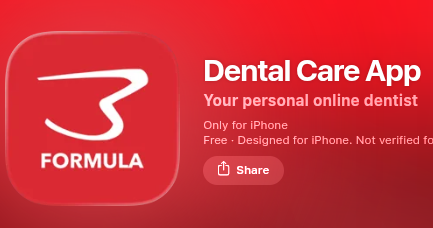
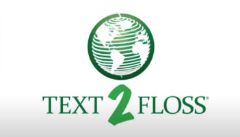

It's a free app. You can brush your teeth with a special guide with visuals! You have the ability to check your brushing statistics. And its better to use it on your phone when you brush your teeth to see those visuals.

It's also a free app and easy to start. It's more fun. You brush your teeth for 2 minutes so play two minutes of music on the iTunes app. In this app you also get to track time on brushing. Theese apps that track your time on brushing are essential better than counting in your head 2 minutes. You get ti use the app and tells you the right time to finish brushing.

It's more than a tracker. Its great for kids and teenagers to help tthem develop their hygeine routines. It also sends text messages to encourage your healthy oral habits. It tracks and view's your oral health progress. It has the ability to use a GPS to find a dental clinic close by! Not only helps you keep a routine but educates you in dental health as well

This mildly complex technology uses digital sensors. Advanced software and its use is for jaw tracking. You have usually been checked with this if you've been to the orthedontist.

This is a dentsal radiograph you mostly see this when you get your teeth clean so they can check your cavities, bone loss and other issues going on. This is for they can recommend you preventitive care if there is anything wrong detected. For this dental radiograph you bite a chewing tab that's also called a sensor holder to keep the digital sensor ready to use. The person whos checking you will use the x-ray sensor and step out the room to activate the X-ray machine that scans your teeth.
I decided to use A-frame a open source web frame work to build 3d scenes. Of a prototype I would imagine is a personal machine that helps you floss much faster. Its rechargeable, uses AI to effectively clean between your teeth and prevent malfunction's. It also connects with an appp on your phone. And lastly it has this tiny screen that tells you how many times you have flossed.